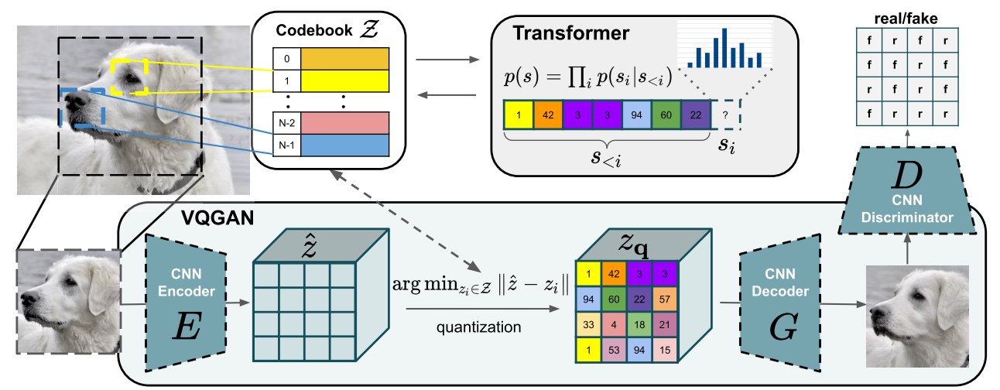

Introducción a la tokenización#
Un elemento clave de los modelos de lenguaje (LLM) es la tokenización. Se trata del primer paso de una red transformer, que consiste en transformar un texto en una secuencia de enteros. Este curso se inspira ampliamente en el video de Andrej Karpathy, Let’s build the GPT Tokenizer.
Cuando implementamos nuestro GPT, utilizamos un tokenizador muy simple que codifica cada carácter con un entero diferente. En la práctica, preferimos codificar fragmentos de caracteres, es decir, agrupaciones de caracteres.
Comprender cómo funciona un tokenizador es esencial para entender el funcionamiento de un modelo de lenguaje.
Al final del curso, podremos responder a estas preguntas:
¿Por qué los LLM tienen dificultades para deletrear palabras?
¿Por qué los LLM tienen dificultades para realizar operaciones simples en cadenas de caracteres (como invertir una cadena)?
¿Por qué los LLM son mejores en inglés?
¿Por qué los LLM son malos en aritmética?
¿Por qué GPT-2 no es muy bueno en Python?
¿Por qué mi LLM se detiene inmediatamente si le envío la cadena “
”? ¿Por qué el LLM se rompe cuando le hablo de SolidGoldMagiKarp?
¿Por qué es preferible usar YAML en lugar de JSON con los LLM?
Nota: El tokenizador es una parte completamente separada del LLM, con su propio conjunto de datos de entrenamiento y que se entrena de manera diferente.

Tokenizador de GPT-2#
Comencemos por analizar la tokenización de GPT-2 a través del sitio Tiktokenizer para comprender qué puede causar problemas. El tokenizador de GPT-2 tiene un vocabulario de aproximadamente 50,000 palabras, lo que significa 50,000 tokens distintos.
Aritmética#
En primer lugar, si examinamos la parte aritmética, notamos rápidamente que los números pueden separarse en tokens de manera bastante arbitraria. Por ejemplo:

998 es un token completo, pero 9988 se separa en dos tokens: 99 y 88. Es fácil imaginar que para el LLM, contar se vuelve complicado.
Palabras idénticas, tokens diferentes#
Para palabras idénticas, según cómo se escriban, obtenemos tokens diferentes.
Por ejemplo:


Las 4 palabras idénticas se representan con tokens diferentes (el token 198 corresponde al salto de línea). El modelo deberá aprender que estos tokens son casi idénticos.
Otros idiomas#
Para la misma frase en diferentes idiomas, el número de tokens utilizados no es el mismo:

Esto se explica por el hecho de que el tokenizador de GPT-2 se entrena principalmente con datos en inglés. En la práctica, esto reduce las capacidades del modelo en otros idiomas, ya que el contexto no es el mismo en términos de información. Se puede insertar un texto mucho más largo en inglés que en japonés.
Python#
Podemos observar cómo el tokenizador se comporta con el código Python:

Cada espacio de la indentación se cuenta como un token. Si el código contiene muchas condiciones o bucles, el contexto aumenta rápidamente, lo que hace que el modelo sea poco eficiente.
Nota: Este defecto se corrigió en las versiones posteriores de GPT (3 y 4), una indentación de 4 tab es un único token, por ejemplo.

Nota 2: La configuración de nuestro editor de código (2 o 4 espacios para la indentación en Python) también puede influir en la tokenización.
Nota 3: Un LLM especializado en código también tendrá un tokenizador especializado, lo que mejora el rendimiento.
Creemos nuestro propio tokenizador#
Para crear nuestro propio tokenizador, comencemos por ver cómo convertir cadenas de caracteres en enteros.
Unicode#
Un método posible es usar Unicode. Esto permite convertir cada carácter en un entero.
sentence="Ce cours de deep learning est génial !"
# ord() permet de récupérer le code unicode d'un caractère
unicode=[ord(char) for char in sentence]
print(unicode)
[67, 101, 32, 99, 111, 117, 114, 115, 32, 100, 101, 32, 100, 101, 101, 112, 32, 108, 101, 97, 114, 110, 105, 110, 103, 32, 101, 115, 116, 32, 103, 233, 110, 105, 97, 108]
En la práctica, no se puede usar este método por varias razones:
Actualmente, hay casi 150,000 caracteres, lo cual es demasiado grande como tamaño de vocabulario.
Hay actualizaciones regulares (una por año), lo que haría que un tokenizador basado en Unicode quedara obsoleto después de un año.
UTF-8#
Otra posibilidad es usar el codificación UTF-8 (16 o 32 bits también serían posibles, pero menos prácticos), que permite codificar Unicode en 4 a 8 bits. Al hacer esto, nuestro tamaño de vocabulario base será de 256.
Mantendremos la idea de UTF-8, pero queremos aumentar el tamaño del vocabulario, ya que 256 es demasiado pequeño y obligaría a los LLM a tener tamaños de contexto enormes.
sentence="Bonjour"
list(sentence.encode('utf-8'))
[66, 111, 110, 106, 111, 117, 114]
Algoritmo de byte-pair encoding#
Para aumentar nuestro tamaño de vocabulario, usamos el algoritmo byte-pair encoding. El funcionamiento de este algoritmo es simple: iterativamente encontramos la pareja de bytes más frecuente y la reemplazamos con un nuevo token (lo que aumenta el vocabulario en 1). Por ejemplo, tomemos la secuencia:
aaabdaaabac
En la primera iteración, vemos que la pareja “aa” es la más frecuente, por lo que la reemplazamos con el token Z:
ZabdZabac
Z=aa
En la segunda iteración, es la pareja “ab” que reemplazamos con Y:
ZYdZYac
Y=ab
Z=aa
Finalmente, en la tercera iteración, podemos reemplazar ZY con X:
XdXac
X=ZY
Y=ab
Z=aa
Así, hemos aumentado el vocabulario mientras reducimos el tamaño de la secuencia (y, por lo tanto, el contexto necesario para procesarla).
Nota: La elección de los datos de entrenamiento tiene un impacto crucial en el tokenizador. Deben elegirse en función de nuestros objetivos.
La ventaja de este algoritmo es que se puede aplicar tantas veces como sea necesario hasta obtener un tamaño de contexto que nos satisfaga.
Nota: La elección de los datos de entrenamiento tiene un impacto crucial en el tokenizador. Deben elegirse en función de nuestros objetivos.
Aplicación del byte-pair encoding#
Para ilustrar el uso del byte-pair encoding, tomemos un gran fragmento de texto y contemos las parejas. Para ello, usemos el primer capítulo del primer volumen de La Comedia Humana de Balzac. El texto se obtuvo de Gutenberg.
with open('balzac.txt', 'r', encoding='utf-8') as f:
text = f.read()
print(text[:1000])
tokens = list(map(int, text.encode('utf-8')))
print(list(tokens[:1000]))
Au milieu de la rue Saint-Denis, presque au coin de la rue du
Petit-Lion, existait naguère une de ces maisons précieuses qui donnent
aux historiens la facilité de reconstruire par analogie l'ancien Paris.
Les murs menaçants de cette bicoque semblaient avoir été bariolés
d'hiéroglyphes. Quel autre nom le flâneur pouvait-il donner aux X et aux
V que traçaient sur la façade les pièces de bois transversales ou
diagonales dessinées dans le badigeon par de petites lézardes
parallèles? Évidemment, au passage de toutes les voitures, chacune de
ces solives s'agitait dans sa mortaise. Ce vénérable édifice était
surmonté d'un toit triangulaire dont aucun modèle ne se verra bientôt
plus à Paris. Cette couverture, tordue par les intempéries du climat
parisien, s'avançait de trois pieds sur la rue, autant pour garantir des
eaux pluviales le seuil de la porte, que pour abriter le mur d'un
grenier et sa lucarne sans appui. Ce dernier étage était construit en
planches clouées l'une sur l'autre comme de
[65, 117, 32, 109, 105, 108, 105, 101, 117, 32, 100, 101, 32, 108, 97, 32, 114, 117, 101, 32, 83, 97, 105, 110, 116, 45, 68, 101, 110, 105, 115, 44, 32, 112, 114, 101, 115, 113, 117, 101, 32, 97, 117, 32, 99, 111, 105, 110, 32, 100, 101, 32, 108, 97, 32, 114, 117, 101, 32, 100, 117, 10, 80, 101, 116, 105, 116, 45, 76, 105, 111, 110, 44, 32, 101, 120, 105, 115, 116, 97, 105, 116, 32, 110, 97, 103, 117, 195, 168, 114, 101, 32, 117, 110, 101, 32, 100, 101, 32, 99, 101, 115, 32, 109, 97, 105, 115, 111, 110, 115, 32, 112, 114, 195, 169, 99, 105, 101, 117, 115, 101, 115, 32, 113, 117, 105, 32, 100, 111, 110, 110, 101, 110, 116, 10, 97, 117, 120, 32, 104, 105, 115, 116, 111, 114, 105, 101, 110, 115, 32, 108, 97, 32, 102, 97, 99, 105, 108, 105, 116, 195, 169, 32, 100, 101, 32, 114, 101, 99, 111, 110, 115, 116, 114, 117, 105, 114, 101, 32, 112, 97, 114, 32, 97, 110, 97, 108, 111, 103, 105, 101, 32, 108, 39, 97, 110, 99, 105, 101, 110, 32, 80, 97, 114, 105, 115, 46, 10, 76, 101, 115, 32, 109, 117, 114, 115, 32, 109, 101, 110, 97, 195, 167, 97, 110, 116, 115, 32, 100, 101, 32, 99, 101, 116, 116, 101, 32, 98, 105, 99, 111, 113, 117, 101, 32, 115, 101, 109, 98, 108, 97, 105, 101, 110, 116, 32, 97, 118, 111, 105, 114, 32, 195, 169, 116, 195, 169, 32, 98, 97, 114, 105, 111, 108, 195, 169, 115, 10, 100, 39, 104, 105, 195, 169, 114, 111, 103, 108, 121, 112, 104, 101, 115, 46, 32, 81, 117, 101, 108, 32, 97, 117, 116, 114, 101, 32, 110, 111, 109, 32, 108, 101, 32, 102, 108, 195, 162, 110, 101, 117, 114, 32, 112, 111, 117, 118, 97, 105, 116, 45, 105, 108, 32, 100, 111, 110, 110, 101, 114, 32, 97, 117, 120, 32, 88, 32, 101, 116, 32, 97, 117, 120, 10, 86, 32, 113, 117, 101, 32, 116, 114, 97, 195, 167, 97, 105, 101, 110, 116, 32, 115, 117, 114, 32, 108, 97, 32, 102, 97, 195, 167, 97, 100, 101, 32, 108, 101, 115, 32, 112, 105, 195, 168, 99, 101, 115, 32, 100, 101, 32, 98, 111, 105, 115, 32, 116, 114, 97, 110, 115, 118, 101, 114, 115, 97, 108, 101, 115, 32, 111, 117, 10, 100, 105, 97, 103, 111, 110, 97, 108, 101, 115, 32, 100, 101, 115, 115, 105, 110, 195, 169, 101, 115, 32, 100, 97, 110, 115, 32, 108, 101, 32, 98, 97, 100, 105, 103, 101, 111, 110, 32, 112, 97, 114, 32, 100, 101, 32, 112, 101, 116, 105, 116, 101, 115, 32, 108, 195, 169, 122, 97, 114, 100, 101, 115, 10, 112, 97, 114, 97, 108, 108, 195, 168, 108, 101, 115, 63, 32, 195, 137, 118, 105, 100, 101, 109, 109, 101, 110, 116, 44, 32, 97, 117, 32, 112, 97, 115, 115, 97, 103, 101, 32, 100, 101, 32, 116, 111, 117, 116, 101, 115, 32, 108, 101, 115, 32, 118, 111, 105, 116, 117, 114, 101, 115, 44, 32, 99, 104, 97, 99, 117, 110, 101, 32, 100, 101, 10, 99, 101, 115, 32, 115, 111, 108, 105, 118, 101, 115, 32, 115, 39, 97, 103, 105, 116, 97, 105, 116, 32, 100, 97, 110, 115, 32, 115, 97, 32, 109, 111, 114, 116, 97, 105, 115, 101, 46, 32, 67, 101, 32, 118, 195, 169, 110, 195, 169, 114, 97, 98, 108, 101, 32, 195, 169, 100, 105, 102, 105, 99, 101, 32, 195, 169, 116, 97, 105, 116, 10, 115, 117, 114, 109, 111, 110, 116, 195, 169, 32, 100, 39, 117, 110, 32, 116, 111, 105, 116, 32, 116, 114, 105, 97, 110, 103, 117, 108, 97, 105, 114, 101, 32, 100, 111, 110, 116, 32, 97, 117, 99, 117, 110, 32, 109, 111, 100, 195, 168, 108, 101, 32, 110, 101, 32, 115, 101, 32, 118, 101, 114, 114, 97, 32, 98, 105, 101, 110, 116, 195, 180, 116, 10, 112, 108, 117, 115, 32, 195, 160, 32, 80, 97, 114, 105, 115, 46, 32, 67, 101, 116, 116, 101, 32, 99, 111, 117, 118, 101, 114, 116, 117, 114, 101, 44, 32, 116, 111, 114, 100, 117, 101, 32, 112, 97, 114, 32, 108, 101, 115, 32, 105, 110, 116, 101, 109, 112, 195, 169, 114, 105, 101, 115, 32, 100, 117, 32, 99, 108, 105, 109, 97, 116, 10, 112, 97, 114, 105, 115, 105, 101, 110, 44, 32, 115, 39, 97, 118, 97, 110, 195, 167, 97, 105, 116, 32, 100, 101, 32, 116, 114, 111, 105, 115, 32, 112, 105, 101, 100, 115, 32, 115, 117, 114, 32, 108, 97, 32, 114, 117, 101, 44, 32, 97, 117, 116, 97, 110, 116, 32, 112, 111, 117, 114, 32, 103, 97, 114, 97, 110, 116, 105, 114, 32, 100, 101, 115, 10, 101, 97, 117, 120, 32, 112, 108, 117, 118, 105, 97, 108, 101, 115, 32, 108, 101, 32, 115, 101, 117, 105, 108, 32, 100, 101, 32, 108, 97, 32, 112, 111, 114, 116, 101, 44, 32, 113, 117, 101, 32, 112, 111, 117, 114, 32, 97, 98, 114, 105, 116, 101, 114, 32, 108, 101, 32, 109, 117, 114, 32, 100, 39, 117, 110, 10, 103, 114, 101, 110, 105, 101, 114, 32, 101, 116, 32, 115, 97, 32, 108, 117, 99, 97, 114, 110, 101, 32, 115, 97, 110, 115, 32, 97, 112, 112, 117, 105, 46, 32, 67, 101, 32, 100, 101, 114, 110, 105, 101, 114, 32, 195, 169, 116, 97, 103, 101, 32, 195, 169, 116, 97, 105, 116, 32, 99, 111, 110, 115, 116, 114, 117, 105, 116, 32, 101, 110, 10, 112, 108, 97, 110, 99, 104, 101, 115, 32, 99, 108, 111, 117, 195, 169]
Contemos ahora las parejas:
def get_stats(ids):
counts = {}
for pair in zip(ids, ids[1:]):
counts[pair] = counts.get(pair, 0) + 1
return counts
stats = get_stats(tokens)
print("Les 5 paires les plus fréquentes : ",sorted(((v,k) for k,v in stats.items()), reverse=True)[:5])
top_pair = max(stats, key=stats.get)
print("La paire la plus fréquente est : ", top_pair)
Les 5 paires les plus fréquentes : [(5025, (101, 32)), (2954, (115, 32)), (2429, (32, 100)), (2332, (116, 32)), (2192, (101, 115))]
La paire la plus fréquente est : (101, 32)
Definamos ahora una función para fusionar las parejas más frecuentes:
# Fonction pour fusionner les paires les plus fréquentes, on donne en entrée la liste des tokens, la paire à fusionner et le nouvel index
def merge(ids, pair, idx):
newids = []
i = 0
while i < len(ids):
# Si on est pas à la dernière position et que la paire correspond, on la remplace
if i < len(ids) - 1 and ids[i] == pair[0] and ids[i+1] == pair[1]:
newids.append(idx)
i += 2
else:
newids.append(ids[i])
i += 1
return newids
# Test de la fonction merge
print(merge([5, 6, 6, 7, 9, 1], (6, 7), 99))
print("taille du texte avant :", len(tokens))
# On fusionne la paire la plus fréquente et on lui donne un nouvel index (256 car on a déjà les caractères de 0 à 255)
tokens2 = merge(tokens, top_pair, 256)
print(tokens2[:100])
print("taille du texte après :", len(tokens2))
[5, 6, 99, 9, 1]
taille du texte avant : 128987
[65, 117, 32, 109, 105, 108, 105, 101, 117, 32, 100, 256, 108, 97, 32, 114, 117, 256, 83, 97, 105, 110, 116, 45, 68, 101, 110, 105, 115, 44, 32, 112, 114, 101, 115, 113, 117, 256, 97, 117, 32, 99, 111, 105, 110, 32, 100, 256, 108, 97, 32, 114, 117, 256, 100, 117, 10, 80, 101, 116, 105, 116, 45, 76, 105, 111, 110, 44, 32, 101, 120, 105, 115, 116, 97, 105, 116, 32, 110, 97, 103, 117, 195, 168, 114, 256, 117, 110, 256, 100, 256, 99, 101, 115, 32, 109, 97, 105, 115, 111]
taille du texte après : 123962
Con una sola fusión, ya hemos reducido significativamente el tamaño de la codificación del texto. Ahora, definamos el tamaño de vocabulario deseado y fusionemos tantas veces como sea necesario.
vocab_size = 276 # La taille du vocabulaire que l'on souhaite
num_merges = vocab_size - 256
tokens_merged=tokens
merges = {} # (int, int) -> int
for i in range(num_merges):
stats = get_stats(tokens_merged)
pair = max(stats, key=stats.get)
idx = 256 + i
print(f"merging {pair} into a new token {idx}")
tokens_merged = merge(tokens_merged, pair, idx)
merges[pair] = idx
merging (101, 32) into a new token 256
merging (115, 32) into a new token 257
merging (116, 32) into a new token 258
merging (195, 169) into a new token 259
merging (101, 110) into a new token 260
merging (97, 105) into a new token 261
merging (44, 32) into a new token 262
merging (111, 110) into a new token 263
merging (101, 257) into a new token 264
merging (111, 117) into a new token 265
merging (114, 32) into a new token 266
merging (97, 110) into a new token 267
merging (113, 117) into a new token 268
merging (100, 256) into a new token 269
merging (97, 32) into a new token 270
merging (101, 117) into a new token 271
merging (101, 115) into a new token 272
merging (108, 256) into a new token 273
merging (105, 110) into a new token 274
merging (46, 32) into a new token 275
Ahora podemos ver la diferencia entre las dos secuencias de tokens:
print("Taille de base:", len(tokens))
print("Taille après merge:", len(tokens_merged))
print(f"compression ratio: {len(tokens) / len(tokens_merged):.2f}X")
Taille de base: 128987
Taille après merge: 98587
compression ratio: 1.31X
Hemos comprimido bien el tamaño de la secuencia mientras aumentamos el vocabulario en solo 20. GPT-2 aumenta el vocabulario a 50,000, por lo que puedes imaginar que esto reduce drásticamente el tamaño de las secuencias.
Decodificación/Codificación#
Ahora que hemos construido nuestro tokenizador, queremos poder pasar de enteros (tokens) a nuestro texto y viceversa.
Para ello, primero construyamos la función de decodificación:
vocab = {idx: bytes([idx]) for idx in range(256)}
for (p0, p1), idx in merges.items():
vocab[idx] = vocab[p0] + vocab[p1]
# Fonction pour décoder les ids en texte, prend en entrée une liste d'entiers et retourne une chaine de caractères
def decode(ids):
tokens = b"".join(vocab[idx] for idx in ids)
text = tokens.decode("utf-8", errors="replace") # errors="replace" permet de remplacer les caractères non reconnus par le caractére spécial �
return text
print(decode([87]))
W
Y la función de codificación:
# Fonction pour encoder le texte en ids, prend en entrée une chaine de caractères et retourne une liste d'entiers
def encode(text):
tokens = list(text.encode("utf-8"))
while len(tokens) >= 2:
stats = get_stats(tokens)
pair = min(stats, key=lambda p: merges.get(p, float("inf")))
if pair not in merges:
break
idx = merges[pair]
tokens = merge(tokens, pair, idx)
return tokens
print(encode("Bonjour"))
# On eut véifier que l'encodage et le décodage fonctionne correctement
print(decode(encode("Bonjour")))
# Et sur le text en entier
text2 = decode(encode(text))
print(text2 == text)
[66, 263, 106, 265, 114]
Bonjour
True
Patrones regex#
La serie de GPT usa patrones regex para separar el texto antes de crear el vocabulario. Esto permite tener más control sobre el tipo de tokens generados (por ejemplo, evitar tener diferentes tokens para “perro”, “perro!” y “perro?”). En el código fuente de Tiktoken (tokenizador de GPT), podemos encontrar el siguiente patrón: ‘s|’t|’re|’ve|’m|’ll|’d| ?\p{L}+| ?\p{N}+| ?[^\s\p{L}\p{N}]+|\s+(?!\S)|\s+.
La sintaxis es bastante compleja, pero la descompondremos para entender qué hace:
‘s|’t|’re|’ve|’m|’ll|’d: Corresponde a las contracciones en inglés como “is”, “it”, “are”, “have”, “am”, “will” y “had”. Estos tokens suelen ser importantes para aislar en el procesamiento del lenguaje natural.
?\p{L}+: Corresponde a palabras compuestas por letras. El “?” al inicio significa que la palabra puede estar precedida por un espacio, lo que permite capturar palabras con o sin espacio inicial.
?\p{N}+: Corresponde a secuencias de números (números). De la misma manera, un espacio opcional puede preceder la secuencia de números.
?[^\s\p{L}\p{N}]+: Corresponde a uno o más caracteres que no son espacios, letras ni números. Esto captura símbolos y puntuaciones, con un espacio opcional al inicio.
\s+(?!\S): Corresponde a uno o más espacios seguidos solo por espacios (es decir, una secuencia de espacios al final de la cadena o antes de un salto de línea).
\s+: Corresponde a uno o más espacios. Es una correspondencia genérica para espacios múltiples entre palabras.
import regex as re
gpt2pat = re.compile(r"""'s|'t|'re|'ve|'m|'ll|'d| ?\p{L}+| ?\p{N}+| ?[^\s\p{L}\p{N}]+|\s+(?!\S)|\s+""")
print(re.findall(gpt2pat, "Hello've world123 how's are you!!!?"))
['Hello', "'ve", ' world', '123', ' how', "'s", ' are', ' you', '!!!?']
El texto se ha separado según las condiciones descritas en el patrón regex.
Tokens especiales#
También se añaden tokens especiales para el entrenamiento y el finetuning:
<|endoftext|>: Este token se usa para delimitar la separación entre diferentes documentos en los datos de entrenamiento.
<|im_start|> y <|im_end|>: Estos tokens delimitan el inicio y el final de un mensaje del usuario para un chatbot, por ejemplo.
Nota: Durante el finetuning, es posible añadir tokens al tokenizador (como <|im_start|> y <|im_end|>, por ejemplo) específicos para la tarea que se desea realizar. Por supuesto, esto requerirá modificar la matriz de embedding y volver a entrenarla.
Otros tipos de tokenizadores#
El tokenizador que hemos implementado está basado en el tokenizador tiktoken de OpenAI, utilizado en los modelos GPT. Otro tokenizador común es sentencepiece, utilizado en los modelos de Google y Meta, por ejemplo.
Nota: Sentencepiece es mucho más complejo que tiktoken y tiene muchos parámetros que ajustar. En la práctica, probablemente se usa porque el código es de código abierto (mientras que el código de entrenamiento de tiktoken no es de código abierto, solo tenemos acceso al código para codificar y decodificar).
Tokenización en otras modalidades?#
Cuando queremos hacer un procesamiento multimodal (que está de moda en este momento), debemos producir tokens a partir de modalidades diferentes al texto, como el sonido o las imágenes. Idealmente, transformaríamos nuestro sonido o imagen en tokens para dárselos al transformer como si fueran texto.
Para las imágenes, podemos usar un VQVAE o un VQGAN. La idea es usar un VAE o GAN para generar valores discretos en un espacio latente. Estos valores discretos luego se usan como tokens.

Figura extraída del artículo.
El modelo SORA de OpenAI hace algo similar, pero con videos:

Figura extraída del artículo
Respuestas a las preguntas del principio#
Ahora responderemos a las preguntas planteadas al principio del curso con lo que hemos aprendido:
¿Por qué los LLM tienen dificultades para deletrear palabras? La separación en tokens hace que cada palabra no se separe en todos sus caracteres, sino en fragmentos de caracteres. Esto hace que sea complicado para el modelo descomponerlas.
¿Por qué los LLM tienen dificultades para realizar operaciones simples en cadenas de caracteres (como invertir una cadena)? Es más o menos por la misma razón que la pregunta anterior. Para invertir una palabra, no basta con invertir los tokens que representan esa palabra.
¿Por qué los LLM son mejores en inglés? Hay varias razones para esto: los datos de entrenamiento del transformer y los datos de entrenamiento del tokenizador. Para el transformer, más datos en inglés le permiten aprender mejor el idioma y sus sutilezas. Para el tokenizador, si se entrena con datos en inglés, los tokens generados estarán principalmente adaptados para palabras en inglés, por lo que necesitaremos menos contexto que para otros idiomas.
¿Por qué los LLM son malos en aritmética? Los números se representan de manera bastante arbitraria según los datos de entrenamiento. Realizar operaciones con estos tokens no es algo fácil para el LLM.
¿Por qué GPT-2 no es muy bueno en Python? Como vimos en este curso, el tokenizador de GPT-2 transforma un espacio simple en un token. En Python, con la indentación y múltiples condiciones/bucles, rápidamente hay muchos espacios, lo que afecta significativamente el contexto.
¿Por qué mi LLM se detiene inmediatamente si le envío la cadena “
”? Se trata de un token especial añadido en los datos de entrenamiento para separar el texto. Cuando el LLM lo encuentra, debe detener su generación.¿Por qué el LLM se rompe cuando le hablo de SolidGoldMagiKarp? Esta pregunta es un poco menos evidente, y te recomiendo leer el excelente blogpost. Explicándolo simplemente, si las palabras están presentes en los datos de entrenamiento del tokenizador pero no en los datos de entrenamiento del LLM, entonces el embedding de este token no estará en absoluto entrenado, y el LLM se comportará de manera aleatoria cuando encuentre este token. SolidGoldMagiKarp es un usuario de Reddit que debía aparecer regularmente en los datos de entrenamiento del tokenizador, pero no en los datos de entrenamiento del transformer.
¿Por qué es preferible usar YAML en lugar de JSON con los LLM? Es un poco la misma idea que con Python. El tokenizador de GPT-2 (y de la mayoría de los modelos, por cierto) transforma un documento JSON en más tokens que su equivalente YAML. Pasar de JSON a YAML reduce, por lo tanto, el contexto necesario para tratar el documento.